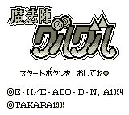

Mahoujin Guru Guru (VGB)

This is a Zelda-style RPG. I haven't played it much, but it looks like you
need to read Japanese to really understand what you are supposed to do in this
game.
Return to Emulator Table of Contents
Last Modified 6 Oct 1996
Created 6 Oct 1996
Luis A. Cruz
cruzl@ccs.neu.edu